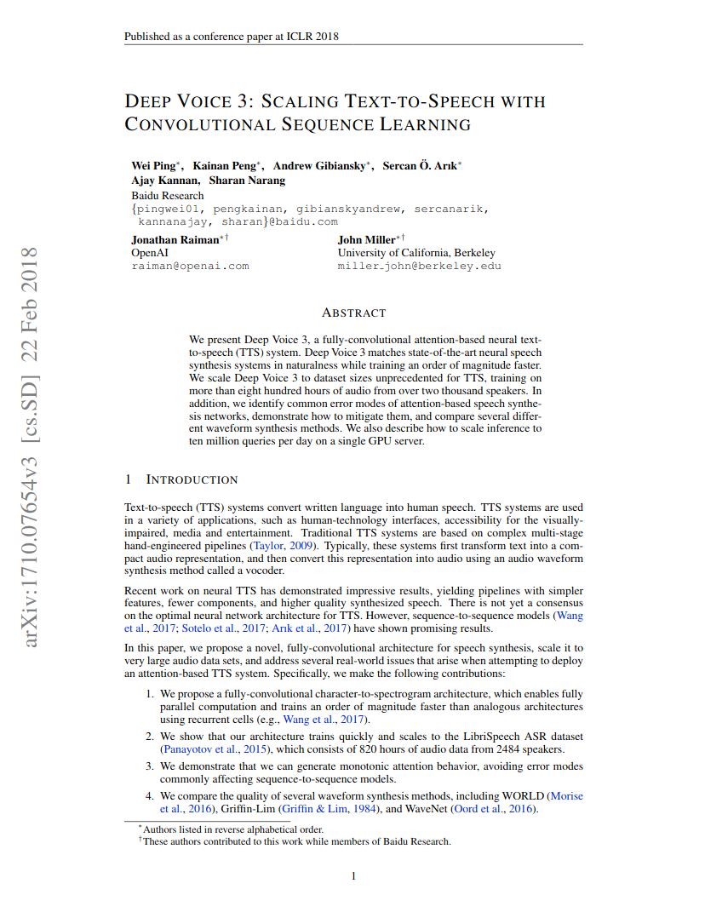
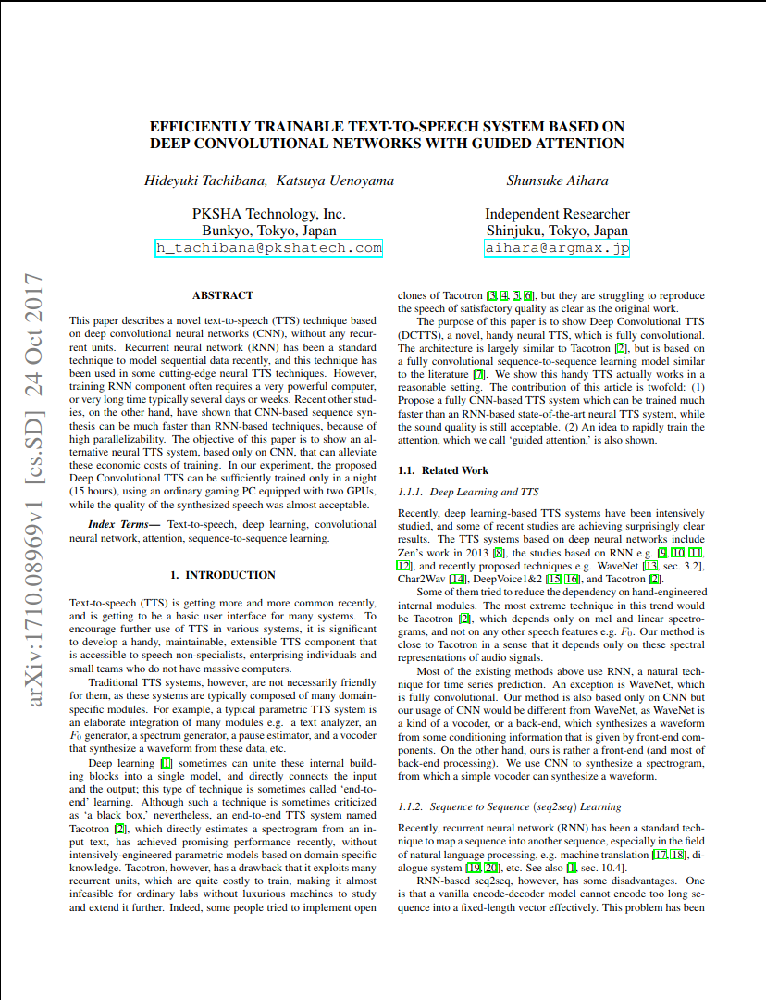

About
Project page for lip synced Educational Lecture Videos converted from American/British English to Indian
English
Methods Explored
We present Deep Voice 3, a fully-convolutional attention-based neural text-to-speech (TTS) system. Deep Voice 3
matches state-of-the-art neural speech synthesis systems in naturalness while training ten times faster. We
scale
Deep Voice 3 to data set sizes unprecedented for TTS, training on more than eight hundred hours of audio from
over
two thousand speakers. In addition, we identify common error modes of attention-based speech synthesis networks,
demonstrate how to mitigate them, and compare several different waveform synthesis methods. We also describe how
to
scale inference to ten million queries per day on one single-GPU server.
|  |
Wei Ping, Kainan Peng, Andrew Gibiansky, Sercan O. Arik, Ajay Kannan,
Sharan Narang, Jonathan Raiman, John Miller
Deep Voice 3: Scaling Text-to-Speech with Convolutional Sequence Learning.
On ArXiv, 2018 .
|
Abstract - Attention-Based TTS
This paper describes a novel text-to-speech (TTS) technique based on deep convolutional neural networks (CNN),
without any recurrent units. Recurrent neural network (RNN) has been a standard technique to model sequential
data
recently, and this technique has been used in some cutting-edge neural TTS techniques. However, training RNN
component often requires a very powerful computer, or very long time typically several days or weeks. Recent
other
studies, on the other hand, have shown that CNN-based sequence synthesis can be much faster than RNN-based
techniques, because of high parallelizability. The objective of this paper is to show an alternative neural TTS
system, based only on CNN, that can alleviate these economic costs of training. In our experiment, the proposed
Deep
Convolutional TTS can be sufficiently trained only in a night (15 hours), using an ordinary gaming PC equipped
with
two GPUs, while the quality of the synthesized speech was almost acceptable.
|  |
Hideyuki Tachibana, Katsuya Uenoyama, Shunsuke Aihara
Efficiently Trainable Text-to-Speech System Based on Deep Convolutional Networks with Guided
Attention
On ArXiv, 2017 .
|
Abstract- Prosody Transfer
We present an extension to the Tacotron speech synthesis architecture that learns a latent embedding space of
prosody, derived from a reference acoustic representation containing the desired prosody. We show that
conditioning
Tacotron on this learned embedding space results in synthesized audio that matches the prosody of the reference
signal with fine time detail even when the reference and synthesis speakers are different. Additionally, we show
that a reference prosody embedding can be used to synthesize text that is different from that of the reference
utterance. We define several quantitative and subjective metrics for evaluating prosody transfer, and report
results
with accompanying audio samples from single-speaker and 44-speaker Tacotron models on a prosody transfer task.
 |
RJ Skerry-Ryan, Eric Battenberg, Ying Xiao, Yuxuan Wang, Daisy Stanton,
Joel Shor, Ron J. Weiss, Rob Clark, Rif A. Saurous
Towards End-to-End Prosody Transfer for Expressive Speech Synthesis with Tacotron
On ArXiv, 2018.
|
n this paper, we introduce and adapt the multi-head attention mechanism to replace the RNN structures and also
the
original attention mechanism in Tacotron2. With the help of multi-head self-attention, the hidden states in the
encoder and decoder are constructed in parallel, which improves the training efficiency. Meanwhile, any two
inputs
at different times are connected directly by self-attention mechanism, which solves the long range dependency
problem effectively. Using phoneme sequences as input, our Transformer TTS network generates mel spectrograms,
followed by a WaveNet vocoder to output the final audio results. Experiments are conducted to test the
efficiency
and performance of our new network. For the efficiency, our Transformer TTS network can speed up the training
about
4.25 times faster compared with Tacotron2. For the performance, rigorous human tests show that our proposed
model
achieves state-of-the-art performance (outperforms Tacotron2 with a gap of 0.048) and is very close to human
quality
(4.39 vs 4.44 in MOS).
 |
Naihan Li, Shujie Liu, Yanqing Liu, Sheng Zhao, Ming Liu, Ming Zhou
Neural Speech Synthesis with Transformer Network.
On ArXiv, 2019.
|